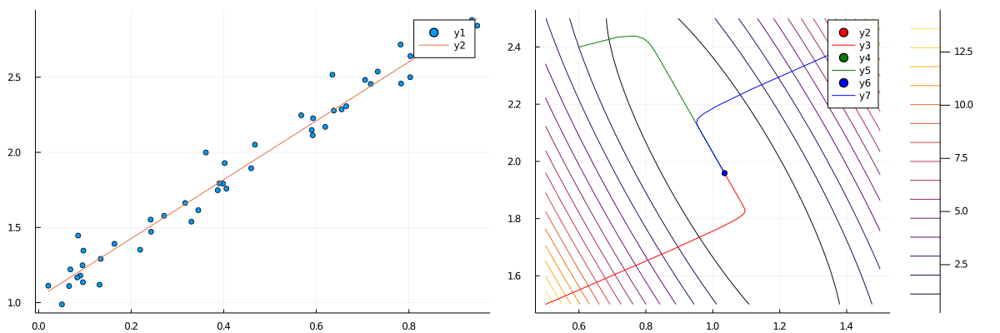
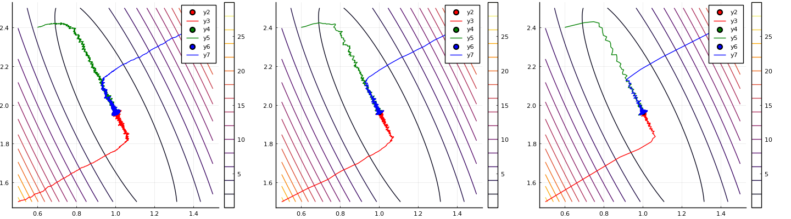
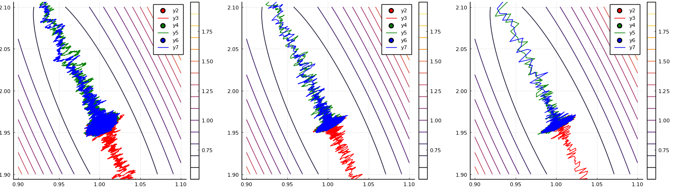
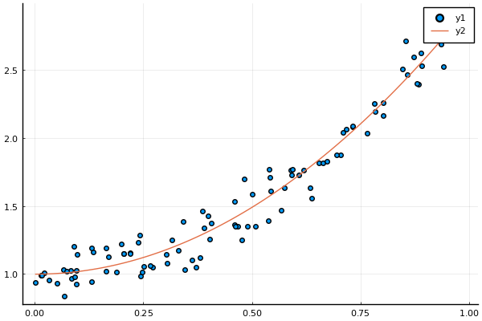

線形回帰を勾配降下法を使って解いてみたメモ。
問題設定
$\bm{y} = (y^{(1)}, y^{(2)}, \ldots, y^{(N)})^T,\ \bm{x}_i = (1, x_1^{(i)}, x_2^{(i)}, \ldots, x_D^{(i)})^T$
とおく。$(\bm{x}_i, y_i),\ i = 1, 2, \ldots, N$ がデータとして与えられている。このとき、入力と出力の間に
$$
\begin{aligned}
y
&= h_{\bm{w}}(\bm{x})\\
&:= w_0 + w_1x_1 + w_2x_2 + \cdots + w_Dx_D\\
&= \bm{w}^T\bm{x}
\end{aligned}
$$
が成り立つと仮定し、これに適する$\bm{w}$を見つけたい。「適する」とは具体的に何なのかというと、ここでは予測とデータとの二乗誤差の和
$$
J(\bm{w}) = \frac{1}{2} \sum_{i=1}^{N} (h_{\bm{w}}(\bm{x}_i) - y^{(i)})^2
$$
が最小となる $\bm{w}$ を求める。この $J$ については呼び名がいくつかあるが、ここではコスト関数と呼ぶ。
係数 $1/2$ は微分した時に出てくる $2$ を消し去るための便宜的なものであり、つける必然はない。
コスト関数の勾配
$w_j$に関する偏微分を計算すると、
$$
\frac{\partial J(\bm{w})}{\partial w_j}
= \sum_{i=1}^{N} (h_{\bm{w}}(\bm{x}_i) - y^{(i)})x_j^{(i)},\ j = 0, 1, \ldots, D
$$
だたし、$x_0 = 1$ とした。
(バッチ)勾配降下法
各ステップで勾配を計算する。勾配と逆向きに進んでいけば、(局所)最小値に近づくことが期待される。
具体的には、各ステップで以下のように $\bm{w}$ を更新する。$\alpha > 0$ は学習率と呼ばれ、状況に応じて適切な値を設定する。
$$
\bm{w} \leftarrow \bm{w} - \alpha \nabla J(\bm{w})
$$
勾配降下法 - Juliaによる実装
関連モジュールをインポートし、型のエイリアスを作っておく。
using Plots
using LinearAlgebra
using Random, Distributions
サンプルデータの生成
前回同様データを生成する関数を作る。
function generate_data(w, N)
D = length(w)
@assert D > 1
d = Normal(0, 0.1)
X = hcat(ones(N), rand(N, D - 1))
y = X * w + rand(d, N)
X, y
end
勾配の計算
以下の計算をJuliaに翻訳したい。
$$
\frac{\partial J(\bm{w})}{\partial w_j}
= \sum_{i=1}^{N} (h_{\bm{w}}(\bm{x}_i) - y^{(i)})x_j^{(i)},\ j = 0, 1, \ldots, D
$$
これをよくみると、ベクトル
として、
$$
\begin{aligned}
\frac{\partial J(\bm{w})}{\partial \bm{w}} &=
\begin{pmatrix}
\sum_{i=1}^{N} a_i x_0^{(i)}\\
\sum_{i=1}^{N} a_i x_1^{(i)}\\
\vdots\\
\sum_{i=1}^{N} a_i x_D^{(i)}
\end{pmatrix}\\
&= \begin{pmatrix}
x_0^{(1)} & x_0^{(2)} & \cdots & x_0^{(N)}\\
x_1^{(1)} & x_1^{(2)} & \cdots & x_1^{(N)}\\
\vdots & \vdots & \ddots & \vdots\\
x_D^{(1)} & x_D^{(2)} & \cdots & x_D^{(N)}\\
\end{pmatrix}
\begin{pmatrix}
a_1 \\ a_2 \\ \vdots \\ a_N
\end{pmatrix}\\
&= X^T\bm{a}
\end{aligned}
$$
ただし、
$$
X = \begin{pmatrix}
\bm{x}_1^T\\
\bm{x}_2^T\\
\vdots\\
\bm{x}_N^T
\end{pmatrix}
$$
である。$\bm{a}$ については $\bm{a} = X\bm{w} - \bm{y}$ と書ける。結局、勾配 dJ は次のように計算できる。
勾配降下法の実装
勾配法は次のように作る。終了条件は、勾配のノルムが十分小さくなったときとする。
wがステップを経るごとにどう動くのかを見たいため、各ステップにおけるwすべてを返却値とする。
function gradient_descent(X, y, w0, eps, max_step=1e5)
@assert size(X, 1) == length(y)
N = length(y)
D = size(X, 2)
ws = [w0]
w = w0
for _ in 1:max_step
dJ = X' * (X * w - y)
norm(dJ) < eps && break
w = w - alpha * dJ
push!(ws, w)
end
hcat(ws...)
end
勾配降下法の出力
実際に使ってみる。コスト関数の地形図も描画してみる。
function main()
Random.seed!(2021)
# データの作成とプロット
X, y = generate_data([1.0, 2.0], 50)
p1 = scatter(X[:, 2], y)
# wの推定
ws = gradient_descent(X, y, [0.5, 1.5])
w = ws[:, end]
display(w)
# wを元に直線を描画
(xmin, xmax) = extrema(X[:, 2])
plot_x = range(xmin, xmax, length=100)
plot_y = map(x -> w[1] + w[2]*x, plot_x)
plot!(p1, plot_x, plot_y)
# コスト関数の地形を描画
J(w0, w1) = begin
w = [w0, w1]
a = X * w - y
a' * a / 2.0
end
w0 = range(0.5, 1.5, length=100)
w1 = range(1.5, 2.5, length=100)
p2 = contour(w0, w1, J)
# 色々なwについてデータを生成し、勾配法のステップごとのwの動きをみる
for (w_init, color) in [([0.5, 1.5], "red"), ([0.6, 2.4], "green"), ([1.4, 2.4], "blue")]
ws = gradient_descent(X, y, w_init)
w = ws[:, end]
scatter!(p2, [w[1]], [w[2]], color=color)
plot!(p2, ws[1, :], ws[2, :], color=color)
end
# 2つのグラフを並べて表示
plot(p1, p2, layout=(1, 2), size=(1200, 400))
end
# main関数を実行
main()
REPLで実行。
julia> include("main.jl")
初期値[0.5, 1.5]についての直線が左。データ点に近い直線を描けていることが見て取れる。
色々な初期値[0.5, 1.5], [0.6, 2.4], [1.4, 2.4]について勾配法を始めて、そのwの軌道を右図に示した。
どれも[1.0, 2.0]へと向かっていることが分かる。

確率的勾配降下法
勾配降下法において、勾配は以下のように計算した。
$$
\nabla J(\bm{w})
= \sum_{i=1}^{N} (h_{\bm{w}}(\bm{x}_i) - y^{(i)})x_j^{(i)},\ j = 0, 1, \ldots, D
$$
これは $N$ 個のデータを考慮して勾配を計算しているが、仮に1個のデータ $(\bm{x}_i, y^{(i)})$ を考慮した場合は次のような式になる。
$J_i$ は $i$番目の予測とデータとの誤差を表すコスト関数である。
$\nabla J_i$ はもはや $J$ の勾配ではないのだが、これを $\bm{w}$ の更新に使う。
$$
\bm{w} \leftarrow \bm{w} - \alpha \nabla J_i(\bm{w}),\ i = 1, 2, \ldots, N
$$
実際には、$i = 1, 2, \ldots, N$ はシャッフルして用いる。
1ステップあたりの計算量は小さい。$\nabla J$ でないものを勾配降下法の更新式に使っているのにもかかわらず、
繰り返し更新していけば $J$ の局所最小値に「近いところ」まで行く(ただし $\alpha$ の値を調整しないと近いところまではいくが、近いところで振動する)。
この手法は 一回の更新あたりの計算量が小さいため、$N$ が巨大な場合に有効。
ミニバッチ勾配降下法
1ステップにおいて、バッチ勾配法では全てのデータ、確率的勾配法では1つのデータを使って $\bm{w}$ を更新した。
ミニバッチ法はその間をとる。バッチ数 $M \ge N$ として、次のように $\bm{w}$ を更新する。
ただし $I_k$ は、直和 $I_1 \bigsqcup I_2 \bigsqcup \cdots \bigsqcup I_K = \{ 1, 2, \ldots, N \}$ 、$|I_k| = M\ (k = 1, 2, \ldots, K-1),\ |I_K| \le M$ を満たす集合。
$$
\bm{w} \leftarrow \bm{w} - \alpha \sum_{i \in I_k} \nabla J_i(\bm{w}),\ k = 1, 2, \ldots, K
$$
$I_k$ については何やら難しく書いてしまったが、要するに、添字 1, 2, …, N をシャッフルしてM個ずつグループ分けしたもの、と捉えれば良い。
$M = 1$ の場合は確率的勾配降下法に一致する。
ミニバッチ勾配降下法 - Juliaによる実装
$I_k = \{ i_1, i_2, \ldots, i_M \}$ とする。このとき勾配法の計算において、$X, \bm{y}$ を単に
$$
\begin{aligned}
X &= \begin{pmatrix}
\bm{x}_{i_1}^T \\
\bm{x}_{i_2}^T \\
\vdots\\
\bm{x}_{i_M}^T
\end{pmatrix}\\
\bm{y} &= (y_{i_1}, y_{i_2}, \ldots, y_{i_M})^T
\end{aligned}
$$
と読み替えれば良い。$I_k$ をidcsを書くことにすると、idcsの要素だけ抜き出したXとyは
それぞれ以下のX1, y1のように書ける。
X1 = X[idcs, :]
y1 = y[idcs]
添字をM等分する関数
$I_k$ ないし idcs の作り方だが、1, 2, ..., Nをシャッフルして、$M$ 個ずつ分割すれば良い。
$M$ 個に分割する関数は以下のように書ける。ただしNがMで割り切れない場合があるため、最後の配列はM個とは限らない。
function split(x, m)
res = Vector{Vector{Int}}()
N = length(x)
for i in 1:m:N
push!(res, x[i:min(i+m-1, N)])
end
res
end
ミニバッチ勾配法の実装
idcsを作る処理とX1, y1を作る処理を追加しただけで、他は勾配法とほとんど変わらない。
function minibatch_descent(X, y, w0; M, alpha = 0.01, eps = 1e-3, max_step=1e4)
@assert size(X, 1) == length(y)
N = length(y)
D = size(X, 2)
ws = [w0]
w = w0
for _ in 1:max_step
for idcs in split(shuffle(1:N), M)
X1 = X[idcs, :]
y1 = y[idcs]
dJ = X1' * (X1 * w - y1)
norm(dJ) < eps && break
w = w - alpha * dJ
push!(ws, w)
end
end
hcat(ws...)
end
ミニバッチ勾配法の出力
色々な $M$ で試したいので、その部分を関数に分ける。
(補足) PlotsのバックエンドがGRのままだとグラフの描画が重かったのでPyPlotに切り替えた。
しかしPyPlotにするとカラーバーに妙な余白が生まれたため、contourの引数にright_margin=-20mmを指定している。
もっと良い対処法があるかもしれない。
using Plots.PlotMeasures
pyplot()
function plot_minibatch(X, y, M)
# コスト関数の地形を描画
J(w0, w1) = begin
w = [w0, w1]
a = X * w - y
a' * a / 2.0
end
w0 = range(0.5, 1.5, length=100)
w1 = range(1.5, 2.5, length=100)
p = plot()
contour!(p, w0, w1, J, right_margin=-20mm)
# 色々なwについてデータを生成し、勾配法のステップごとのwの動きをみる
for (w_init, color) in [([0.5, 1.5], "red"), ([0.6, 2.4], "green"), ([1.4, 2.4], "blue")]
ws = minibatch_descent(X, y, w_init, M=M)
w = ws[:, end]
scatter!(p, [w[1]], [w[2]], color=color)
plot!(p, ws[1, :], ws[2, :], color=color)
display(w)
end
p
end
$M = 1, 10, 50$ の3パターンでバッチ勾配降下法を行い、$\bm{w}$ の軌道を描画する。
$M = 1$ の場合は確率的勾配降下法に一致する。
function main()
Random.seed!(2021)
# データの作成
X, y = generate_data([1.0, 2.0], 50)
p1 = plot_minibatch(X, y, 1)
p2 = plot_minibatch(X, y, 10)
p3 = plot_minibatch(X, y, 50)
plot(p1, p2, p3, layout=(1, 3), size=(1800, 400))
end
$M$ の値が大きくなればなるほど、$\bm{w}$ の軌道が滑らかになっているのが分かる。
しかし、いずれの場合にも $\bm{w} = (1, 2)$ へ収束していることが分かる。

拡大してみると、$\bm{w} = (1, 2)$ 周辺で振動していることが分かる。
これは $\bm{w} = (1, 2)$ 周辺では学習率 $\alpha$ が大きいことが原因で、学習率を小さくすれば振動も小さくなる。
しかし小さくしすぎるとなかなか $(1, 2)$ へと進まなくなる。
どのような学習率を設定すべきなのかについては、様々な手法が提案されている。
そもそも学習率を定数ではなく、ステップによって変える方法がある
(学習率のスケジュール、スケジューリングと呼ぶようだが、この辺りはまだ詳しく知らない)。

問題設定(2) 基底関数を含む場合
$\bm{y} = (y^{(1)}, y^{(2)}, \ldots, y^{(N)})^T,\ \bm{x}_i = (1, x_1^{(i)}, x_2^{(i)}, \ldots, x_D^{(i)})^T, \bm{\phi}(\bm{x}) = (1, \phi_1(\bm{x}), \phi_2(\bm{x}), \ldots, \phi_D(\bm{x}))$
とおく。$(\bm{x}_i, y_i),\ i = 1, 2, \ldots, N$ がデータとして与えられている。このとき、入力と出力の間に
$$
\begin{aligned}
y
&= h_{\bm{w}}(\bm{x})\\
&:= w_0 + w_1\phi_1(\bm{x}) + w_2\phi_2(\bm{x}) + \cdots + w_D\phi_D(\bm{x})\\
&= \bm{w}^T\bm{\phi}(\bm{x})
\end{aligned}
$$
が成り立つと仮定し、そのコスト関数
$$
\begin{aligned}
J(\bm{w}) = \frac{1}{2} \sum_{i=1}^{N} (h_{\bm{w}}(\bm{x}_i) - y^{(i)})^2
\end{aligned}
$$
が最小になるように $\bm{w}$ を決定したい。
勾配降下法 (2)
実は、$X$ を以下の $\Phi$ だと思って勾配降下法を行うだけで良い。
$$
\begin{aligned}
\Phi =
\begin{pmatrix}
\bm{\phi}(\bm{x}_1)^T\\
\bm{\phi}(\bm{x}_2)^T\\
\vdots\\
\bm{\phi}(\bm{x}_N)^T
\end{pmatrix}
\end{aligned}
$$
なぜなら、単に $x_1, x_2, \ldots, x_D$ が $\phi_1(\bm{x}), \phi_2(\bm{x}), \ldots, \phi_D(\bm{x})$
に変わっただけだからである。
普通の勾配降下法を使っても良いし、ミニバッチ勾配降下法を使っても良い。
これらの手法を修正する必要はない。
ミニバッチ勾配降下法 Juliaによる実装 (2)
サンプルデータの生成 (2)
これは前回と同じ。
function generate_data(w, N, phi)
D = length(w)
@assert D > 1
d = Normal(0, 0.1)
X = hcat(ones(N), rand(N, D - 1))
Phi = similar(X)
for i in 1:N
Phi[i, 1] = 1.0
Phi[i, 2:end] = phi(X[i, 2:end])
end
y = Phi * w + rand(d, N)
X, Phi, y
end
勾配法の実行と出力 (2)
ここでは2次関数 $y = 1 + 2x^2$ からデータを生成し、
ミニバッチ勾配降下法で $\bm{w}$ を推定してみる。
function main()
Random.seed!(2021)
# データの作成
X, Phi, y = generate_data([1.0, 2.0], 100, x -> [x[1]^2])
scatter(X[:, 2], y)
ws = minibatch_descent(Phi, y, [0.5, 1.5], M=50)
w = ws[:, end]
display(w)
(xmin, xmax) = extrema(X[:, 2])
plot_x = range(xmin, xmax, length=100)
plot!(plot_x, x -> w[1] + w[2] * x^2)
end
julia> include("gradient_descent.jl")
2-element Vector{Float64}:
0.9944138112009525
1.9650038380754904
